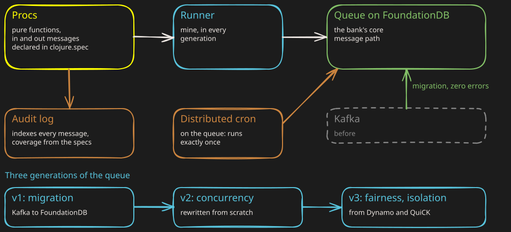

Moving a bank's core without stopping production.
Griffin Bank, 2022 to 2025, while it obtained its banking licence. The message queue at the centre of the bank, in three generations.
The problem: the bank is a message system. Its central queue had to move from Kafka to FoundationDB, with the bank running.
1The diagram

the business codethe runner and its generationsthe queuebuilt on top
2What I built
-
The runner: the bank's "procs" are pure functions, every message declared in clojure.spec; I wrote the runner in every generation.
-
v1, the migration: starting from the CTO's proof of concept, I wrote the runners and all the migration tooling, then ran the migration.
-
v2 and v3, rewritten from scratch: concurrency, then fairness and isolation between workloads.
- From Dynamo (Amazon, SOSP 2007: the consistent-hashing ring) and QuiCK (Apple, SIGMOD 2021).
-
The distributed cron: built on the queue, each scheduled job runs exactly once in the cluster.
-
The audit log: it indexes every message; the list of specs is the list of what it indexes.
3The result
-
Zero errors, zero incidents at the switchover.
- So quiet I first thought the switch had not been flipped; the VP called it out at an all-hands.
-
A third of the audit store saved, by making its history optional.
-
Generated tests: a framework on clojure.spec and test.check, in FoundationDB's lineage, that finds bugs fast.
4My role
-
Senior software engineer, on the platform.
- I helped stand up new teams as the bank grew.
-
Internal tech talks, RFCs and mentoring: message queues and fairness, distributed crons.